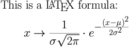

Toolbox for Camlmix ![[difficulty = 1 camel]](/1camel.png "difficulty = 1 camel (suitable for OCaml beginners)")
This is a collection of useful tips and code for writing documents using Camlmix or its derivatives such as Camlremix. Read the Camlmix tutorial first.
1. OCaml code samples
1.1 File input
1.2 Calling external programs
1.3 Changing the default printer
2. Tips and tricks for web documents
2.1 Changing the colors in a stylesheet
2.2 Inserting LaTeX snippets
3. Preprocessing OCaml files
Anyone is free to use, copy, modify or redistribute any inlined example that may be found in the Camlmix Toolbox.
Disclaimer: No guarantee of any kind is given concerning the reliability of this document.
1. OCaml code samples
The different samples are grouped by sections. Copy/paste them where you need them. They are not provided as a single library because they are too heterogenous and not complex enough too justify a library. However, if you are very impatient, you can download toolbox.ml and use it by editing the sample test.camlmix. You may also download toolbox.mli for information.
The code samples are useful when using Camlmix,
but also probably in many other situations where
OCaml is used as a scripting language.
They may also be useful for the OCaml beginner looking for short real-life
examples rather than for Fibonacci numbers or the sieve of Eratosthenes.
;-)
1.1 File input
|
Scanning a whole channel -
The function given as argument is
applied to each character of the channel, until the end is reached.
val read_chan : (char -> 'a) -> in_channel -> unit let read_chan f ic = try while true do f (input_char ic) done with End_of_file -> () |
|
Including a file -
The given file is inserted without any transformation.
val include_file : string -> unit let include_file file = let ic = open_in_bin file in read_chan print_char ic; close_in ic |
|
Verbatim input in a HTML document -
Special characters are escaped so that the whole contents of the file
is displayed.
val html_verbatim : string -> unit let html_verbatim file = let ic = open_in_bin file in print_string "<pre>\n"; read_chan (function '<' -> print_string "<" '>' -> print_string ">" '&' -> print_string "&" c -> print_char c) ic; print_string "</pre>"; close_in ic |
1.2 Calling external programs
|
Calling an external program -
For example, on Unix systems
command "date"
will print the current date.
val command : string -> unit let command s = if Sys.command s = 0 then () else invalid_arg ("command: " ^ s) |
|
Recursive call to Camlmix -
The insertion of a document that must be preprocessed with Camlmix
without inheriting neither modifying the current environment
is done by starting a new
camlmix process.
Most of the time, it is preferable to use the
include directive instead of this.
val camlmix : string -> unit let camlmix file = command ("camlmix " ^ file) |
|
Catching the output of a command -
This function converts the output of a system command into an OCaml string.
This is useful in order to avoid to call the command several times or
if some further processing is required.
For instance,
slurp_command "date" is
the equivalent of the Unix shell command `date`.
Note that this function should work on every
system, including Windows and MacOS.
val slurp_command : string -> string #load "unix.cma" let read_command_output f s = let ic = Unix.open_process_in s in (try while true do f (input_char ic) done with End_of_file -> ()); match Unix.close_process_in ic with Unix.WEXITED 0 -> () _ -> invalid_arg ("read_command_output: " ^ s) let slurp_command s = let buf = Buffer.create 100 in read_command_output (Buffer.add_char buf) s; Buffer.contents buf |
|
Using an external filter or converter -
It is sometimes useful to process some text using a command that
read its input from
stdin and writes its output to
stdout. feed command data calls
command, tells it to read data as its
standard input. sfeed is the same as feed except
that the result is put into a string.
ffeed prints the results to the
specified out_channel. bfeed prints the result into the
specified buffer.
kfeed is the general function that
expects a handler function that will treat each character successively
and may raise an exception.
val kfeed : (char -> 'a) -> string -> string -> unit val feed : string -> string -> unit val ffeed : out_channel -> string -> string -> unit val bfeed : Buffer.t -> string -> string -> unit val sfeed : string -> string -> string (* Warning: the following function crashes in OCaml 3.09.2, because of that bug: http://caml.inria.fr/mantis/view.php?id=4062 (close_out is applied a second time during Unix.close_process) *) let kfeed f command data = let (ic, oc) as channels = Unix.open_process command in output_string oc data; close_out oc; let exn = ref None in (try while true do f (input_char ic) done with End_of_file -> () e -> exn := Some e); (match Unix.close_process channels with Unix.WEXITED 0 -> () _ -> invalid_arg ("feed_command: " ^ command)); match !exn with Some e -> raise e None -> () let feed = kfeed print_char let ffeed oc command data = kfeed (output_char oc) command data let bfeed buf command data = kfeed (Buffer.add_char buf) command data let sfeed command data = let buf = Buffer.create (2 * String.length data) in bfeed buf command data; Buffer.contents buf |
1.3 Changing the default printer
Normally Camlmix prints the document blocks without
modifications and flushes the standard output. This behavior can
be changed by using the Camlmix.printer hook.
Note that print_with and print_if
are now predefined in the Camlmix module.
|
Changing the printer only for the next block -
Here, we
define a function
print_with that will change the
behavior of the printer only for the next block. For instance,
print_with ignore will skip the next block.
val print_with : (string -> unit) -> unit let print_with f = let saved_printer = !Camlmix.printer in Camlmix.printer := (fun s -> f s; Camlmix.printer := saved_printer) |
|
Conditional output of the next block -
Most of the time, pure OCaml code is convenient enough to display
text under certain conditions as in
print_string (if test then "hello" else "goodbye").
However, when the text to display is long and contains many double
quotes (") or backslashes (\),
it becomes difficult to protect each of them by manually adding
backslashes. The following print_if function will
print the next block if its argument is true and ignore
it otherwise.
val print_if : bool -> unit let print_if test = if not test then print_with ignore |
2. Tips and tricks for web documents
All the examples that are given in this section require the standard distribution of OCaml and the OCaml functions that are defined in the previous section, and sometimes some external commands or utilities that may or may not be available for every OS.
2.1 Changing the colors in a stylesheet
Place the definitions of the colors in several Camlmix files. Write a
unique CSS using Camlmix insertions for the colors.
For instance, file orange_style.mlx is the following:
## let main_color = "orange" ##
File blue_style.mlx is the following:
## let main_color = "blue" ##
style.css.mlx looks like this:
body {
color: ## main_color () ##;
}
...
table {
border: solid ## main_color () ## 3px;
}
...
And Camlmix will generate 2 stylesheets for the price of one:
camlmix -o orange.css orange_style.mlx style.css.mlx camlmix -o blue.css blue_style.mlx style.css.mlx
2.2 Inserting LaTeX snippets
For example, the following Camlmix/HTML/LaTeX code:
## print_with latex ## \Huge This is a \LaTeX\ formula: % and that is a comment $$ x \rightarrow \frac{1}{\sigma\sqrt{2\pi}} \cdot e^{-\frac{(x-\mu)^2}{2\sigma^2}} $$ ## () ##
will be inserted into the HTML document just like this: 
For this, we will define one OCaml function of general purpose that converts a piece of LaTeX into an image, and then some Camlmix-dependent code that makes it convenient to use from a Camlmix/HTML file.
The following function latex_image
generates an image of the given LaTeX code and
saves it under the given file name.
It requires latex, dvips and
convert (ImageMagick) in a Unix environment.
The format of the image is inferred from its extension.
The size of the font can be changed with the usual LaTeX commands such as
\large and \small.
The file_memo class is defined in order
to recompute only the images that need to be recomputed.
We put these functions in a file named latex.ml.
open Printf (* The function that computes the image *) let latex_image ?(preamble = "") code file = let prefix = Filename.chop_extension file in let oc = open_out (prefix ^ ".tex") in fprintf oc "\ \\batchmode \\documentclass{article} %s \\pagestyle{empty} \\begin{document} %s \\end{document} " preamble code; close_out oc; if Sys.command (sprintf "latex %s.tex > %s.log 2>&1" prefix prefix) <> 0 then invalid_arg "latex_image (latex)"; if Sys.command (sprintf "dvips -S1 -i -E %s.dvi >> %s.log 2>&1" prefix prefix) <> 0 then invalid_arg "latex_image (dvips)"; Sys.rename (prefix ^ ".001") (prefix ^ ".ps"); if Sys.command (sprintf "convert %s.ps %s >> %s.log 2>&1" prefix file prefix) <> 0 then invalid_arg "latex_image (convert)" (* An almost reusable MD5-based dependency checker *) type memo = ((Digest.t option * Digest.t * string), Digest.t) Hashtbl.t class file_memo memo_file = let memo = if Sys.file_exists memo_file then let ic = open_in_bin memo_file in try let memo : memo = Marshal.from_channel ic in close_in ic; memo with exn -> close_in ic; Sys.remove memo_file; raise exn else Hashtbl.create 100 in object (self) method private update = let to_remove = Hashtbl.fold (fun ((_, _, file) as key) _ accu -> if not (Sys.file_exists file) then key :: accu else accu) memo [] in List.iter (Hashtbl.remove memo) to_remove method save = self#update; let oc = open_out_bin memo_file in Marshal.to_channel oc memo []; close_out oc method do_it ?preamble ~code ~file f = let opt = match preamble with None -> None Some s -> Some (Digest.string s) in let key = (opt, Digest.string code, file) in let do_nothing = try let digest = Hashtbl.find memo key in Sys.file_exists file && digest = Digest.file file with Not_found -> false in if do_nothing then () else ((f () : unit); if not (Sys.file_exists file) then invalid_arg (sprintf "#do_it: expected file %s was not created" file) else Hashtbl.replace memo key (Digest.file file)) end
From a Camlmix/HTML file, we can define a latex function
that will automatically choose a name for the file, insert the HTML
code that displays the image and finally update a list of the images that
were generated so that the right image files
can be uploaded to the public website.
Recompilation of the images occurs only if needed.
File latex.mlx can be written as follows:
## #load "latex.cmo";; open Printf let image_counter = ref 0 let images = ref [] let memo = new Latex.file_memo "latex-memo" (* shared by several documents *) let new_image () = incr image_counter; let src = !Camlmix.source in let name = sprintf "%s-img%i.png" src !image_counter in images := (src, name) :: !images; name let list_images () = let tbl = Hashtbl.create 100 in List.iter (fun (src, name) -> let oc = try Hashtbl.find tbl src with Not_found -> let oc = open_out (src ^ ".images") in Hashtbl.add tbl src oc; oc in fprintf oc "%s\n" name) !images; Hashtbl.iter (fun src oc -> close_out oc) tbl let _ = at_exit list_images; at_exit (fun () -> memo#save) let latex ?preamble ?(valign = "middle") code = try let file = new_image () in let f () = Latex.latex_image ?preamble code file in memo#do_it ?preamble ~code ~file f; printf "<img src=\"%s\" alt=\"%s\" style=\"vertical-align:%s\">" file code valign with exn -> let c = !Camlmix.char in eprintf "File %S, line %i, characters %i-%i:\n" !Camlmix.source !Camlmix.line c (c + String.length code - 1); flush stderr; raise exn
3. Preprocessing OCaml files
It is possible to use Camlmix as a preprocessor for OCaml files. This can be useful for merging or including files, or inserting characters at any point of the file, which is not possible with Camlp4. A command for compiling a file has the following form:
$ ocamlc -c -pp 'camlmix ppocaml.mlx' -impl my_source_file.mlx
or simply
$ ocamlc -c -pp 'camlmix ppocaml.mlx' my_source_file.ml
where ppocaml.mlx is here to generate correct error reports whenever a compilation error occurs:
File ppocaml.mlx:
## (* File ppocaml.mlx: OCaml-style line directives for camlmix-processed files *) let _ = let line_directive () = Printf.sprintf "# %i %S\n%s" !Camlmix.line !Camlmix.source (String.make (!Camlmix.char - 1) ' ') in let default_printer = !Camlmix.printer in let new_printer s = default_printer (line_directive ()); default_printer s in Camlmix.printer := new_printer
For instance, my_source_file.mlx could look like this:
## @include "some_definitions.mlx" ## (* some local OCaml code *) ... ## @include "more_definitions.mlx" ## (* more local OCaml code *) ...
And the included files themselves can include other files.